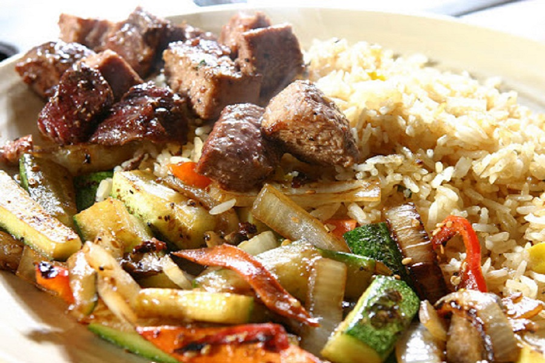

Sizzling Hibachi Dinners
Tender sirloin steak, grilled chicken breast, colossal shrimp, and fresh sea scallops seared on high-heat flat tops with house sweet glaze, butter, and signature yum yum sauce.
Explore Hibachi →Welcome to Tin Tin Café Japanese Cuisine, University City’s destination for the freshest hand-rolled sushi, sizzling teppanyaki hibachi combinations, and golden wok fried rice. Prepared fresh to order with generous portions and warm neighborhood hospitality.

Every dish is crafted with prime proteins, crisp vegetables, and scratch-made sauces.
Tender sirloin steak, grilled chicken breast, colossal shrimp, and fresh sea scallops seared on high-heat flat tops with house sweet glaze, butter, and signature yum yum sauce.
Explore Hibachi →From our crispy Spider Roll with tempura soft-shell crab to the vibrant Rainbow Roll draped in tuna and salmon, our sushi chefs prepare each roll to order using sushi-grade seafood.
Explore Sushi Rolls →Serving Charlotte and the UNC Charlotte community with fast dine-in service, reliable takeout packaging, and family-sized portions made affordable for lunch and dinner.
Plan Your Visit →Our sushi bar delivers pristine seafood rolled in seasoned sushi rice and crisp toasted nori. Highlights include the Rainbow Roll ($12.95) with sashimi draped over a California roll, the Sunset Roll ($13.95) with spicy tuna and avocado, and the Spider Roll ($13.95) packed with crunchy soft-shell crab and sweet kabayaki glaze.
Discover The Sushi Bar →

Every plate of fried rice and yaki udon is tossed over roaring high-heat wok flames. Our Jumbo Shrimp Fried Rice ($13.95) features plump tiger shrimp, fluffy scrambled eggs, diced sweet carrots, and scallions seasoned with garlic soy and toasted sesame oil.
Browse The Full Menu →Conveniently located off Mallard Creek Church Road at 3020 Driwood Court. Dine in our comfortable dining room or call ahead for quick curbside takeout.
Directions & Contact →